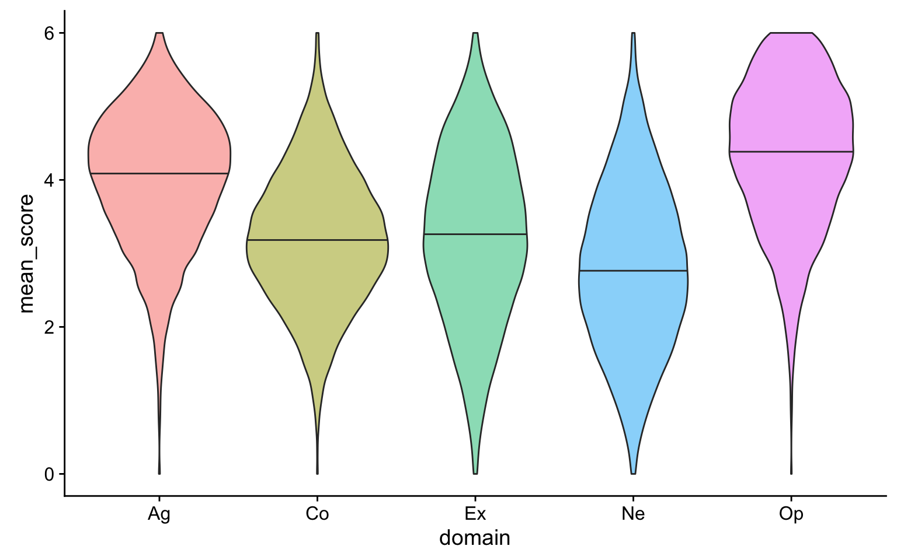

lubridate for simple date calculationsselect() helpers
lubridate package (and then teach Lisa)# libraries needed for these examples
library(tidyverse)
library(lubridate)These examples will use data from disgust.csv, which contains data from the Three Domain Disgust Scale. Each participant is identified by a unique user_id and each questionnaire completion has a unique id.
disgust <- read_csv("data/disgust.csv")Questionnaire Instructions: The following items describe a variety of concepts. Please rate how disgusting you find the concepts described in the items, where 0 means that you do not find the concept disgusting at all, and 6 means that you find the concept extremely disgusting.
| colname | question |
|---|---|
| moral1 | Shoplifting a candy bar from a convenience store |
| moral2 | Stealing from a neighbor |
| moral3 | A student cheating to get good grades |
| moral4 | Deceiving a friend |
| moral5 | Forging someone’s signature on a legal document |
| moral6 | Cutting to the front of a line to purchase the last few tickets to a show |
| moral7 | Intentionally lying during a business transaction |
| sexual1 | Hearing two strangers having sex |
| sexual2 | Performing oral sex |
| sexual3 | Watching a pornographic video |
| sexual4 | Finding out that someone you don’t like has sexual fantasies about you |
| sexual5 | Bringing someone you just met back to your room to have sex |
| sexual6 | A stranger of the opposite sex intentionally rubbing your thigh in an elevator |
| sexual7 | Having anal sex with someone of the opposite sex |
| pathogen1 | Stepping on dog poop |
| pathogen2 | Sitting next to someone who has red sores on their arm |
| pathogen3 | Shaking hands with a stranger who has sweaty palms |
| pathogen4 | Seeing some mold on old leftovers in your refrigerator |
| pathogen5 | Standing close to a person who has body odor |
| pathogen6 | Seeing a cockroach run across the floor |
| pathogen7 | Accidentally touching a person’s bloody cut |
Select columns by name or number.
You can select each column individually, separated by commas (e.g., col1, col2). You can also select all columns between two columns by separating them with a colon (e.g., start_col:end_col).
moral <- disgust %>% select(user_id, moral1:moral7)
glimpse(moral)## Observations: 20,000
## Variables: 8
## $ user_id <int> 0, 1, 2, 2118, 2311, 3630, 4458, 4651, 4976, 5469, 606...
## $ moral1 <int> 5, 2, 1, 0, 4, 1, 3, 2, 6, 0, 4, 1, 1, 4, 2, 1, NA, 3,...
## $ moral2 <int> 6, 2, 1, 1, 4, 5, 4, 4, 6, 1, 5, 2, 4, 4, 5, 3, NA, 5,...
## $ moral3 <int> 4, 1, 1, 1, 4, NA, 3, 3, 6, 3, 6, 2, 3, 4, 4, 2, NA, 4...
## $ moral4 <int> 6, 2, 1, 1, 4, 5, 4, 5, 0, 4, 5, 2, 4, 4, 6, 4, NA, 5,...
## $ moral5 <int> 5, 1, NA, 1, 4, 5, 4, 5, 6, 1, 5, 1, 3, 3, 5, 5, NA, 3...
## $ moral6 <int> 5, 1, NA, 2, 4, 5, 3, 5, 0, 0, 4, 2, 4, 3, 4, 4, NA, 4...
## $ moral7 <int> 6, 1, 1, 1, 4, 1, 3, 3, 0, 1, 4, 1, 3, 2, 5, 4, NA, 3,...You can select colmns by number, which is useful when the column names are long or complicated.
sexual <- disgust %>% select(2, 11:17)
glimpse(sexual)## Observations: 20,000
## Variables: 8
## $ user_id <int> 0, 1, 2, 2118, 2311, 3630, 4458, 4651, 4976, 5469, 606...
## $ sexual1 <int> 4, 3, 1, 4, 2, 0, 2, 4, 0, 3, 3, 1, 1, 4, 2, 0, NA, 1,...
## $ sexual2 <int> 0, 1, NA, 3, 1, 5, 4, 2, 0, 5, 0, 0, 0, 2, 1, 0, NA, 3...
## $ sexual3 <int> 1, 1, 1, 0, 2, 0, 3, 4, 0, 2, 1, 0, 0, 1, 0, 0, NA, 3,...
## $ sexual4 <int> 0, 2, NA, 6, 1, 2, 2, 6, 0, 4, 6, 3, 1, 3, 2, 0, NA, 5...
## $ sexual5 <int> 1, 1, 1, 0, 1, 0, 1, 6, 0, 6, 3, 0, 0, 2, 1, 0, NA, 5,...
## $ sexual6 <int> 4, 2, NA, 3, 1, 1, 5, 6, 0, 6, 5, 4, 2, 3, 4, 0, NA, 3...
## $ sexual7 <int> 5, 2, NA, 5, 5, 0, 4, 2, 0, 5, 3, 4, 1, 6, 3, 0, NA, 3...You can use a minus symbol to unselect columns, leaving all of the other columns. If you want to exclude a span of columns, put parentheses around the span first (e.g., -(moral1:moral7), not -moral1:moral7).
pathogen <- disgust %>% select(-id, -date, -(moral1:sexual7))
glimpse(pathogen)## Observations: 20,000
## Variables: 8
## $ user_id <int> 0, 1, 2, 2118, 2311, 3630, 4458, 4651, 4976, 5469, 6...
## $ pathogen1 <int> 6, 3, NA, 5, 5, 6, 6, 5, 6, 5, 6, 4, 4, 5, 3, 5, NA,...
## $ pathogen2 <int> 1, 2, NA, 6, 5, 3, 4, 6, 6, 2, 5, 3, 4, 2, 3, 4, NA,...
## $ pathogen3 <int> 6, 3, 1, 4, 4, 1, 4, 6, 6, 4, 5, 1, 3, 0, 2, 3, NA, ...
## $ pathogen4 <int> 5, 3, NA, 6, 4, 1, 3, 4, 6, 4, 5, 1, 4, 4, 4, 1, NA,...
## $ pathogen5 <int> 4, 2, NA, 5, 5, 3, 3, 6, 0, 2, 5, 4, 5, 5, 5, 4, NA,...
## $ pathogen6 <int> 5, 3, NA, 5, 4, 1, 2, 1, 0, 2, 5, 1, 4, 5, 1, 2, NA,...
## $ pathogen7 <int> 6, 3, NA, 4, 3, 0, 3, 6, 6, 6, 5, 3, 5, 4, 5, 3, NA,...You can select columns based on criteria about the column names.
starts_with()Select columns that start with a character string.
u <- disgust %>% select(starts_with("u"))
glimpse(u)## Observations: 20,000
## Variables: 1
## $ user_id <int> 0, 1, 2, 2118, 2311, 3630, 4458, 4651, 4976, 5469, 606...ends_with()Select columns that end with a character string.
firstq <- disgust %>% select(ends_with("1"))
glimpse(firstq)## Observations: 20,000
## Variables: 3
## $ moral1 <int> 5, 2, 1, 0, 4, 1, 3, 2, 6, 0, 4, 1, 1, 4, 2, 1, NA, ...
## $ sexual1 <int> 4, 3, 1, 4, 2, 0, 2, 4, 0, 3, 3, 1, 1, 4, 2, 0, NA, ...
## $ pathogen1 <int> 6, 3, NA, 5, 5, 6, 6, 5, 6, 5, 6, 4, 4, 5, 3, 5, NA,...contains()Select columns that contain a character string.
pathogen <- disgust %>% select(contains("pathogen"))
glimpse(pathogen)## Observations: 20,000
## Variables: 7
## $ pathogen1 <int> 6, 3, NA, 5, 5, 6, 6, 5, 6, 5, 6, 4, 4, 5, 3, 5, NA,...
## $ pathogen2 <int> 1, 2, NA, 6, 5, 3, 4, 6, 6, 2, 5, 3, 4, 2, 3, 4, NA,...
## $ pathogen3 <int> 6, 3, 1, 4, 4, 1, 4, 6, 6, 4, 5, 1, 3, 0, 2, 3, NA, ...
## $ pathogen4 <int> 5, 3, NA, 6, 4, 1, 3, 4, 6, 4, 5, 1, 4, 4, 4, 1, NA,...
## $ pathogen5 <int> 4, 2, NA, 5, 5, 3, 3, 6, 0, 2, 5, 4, 5, 5, 5, 4, NA,...
## $ pathogen6 <int> 5, 3, NA, 5, 4, 1, 2, 1, 0, 2, 5, 1, 4, 5, 1, 2, NA,...
## $ pathogen7 <int> 6, 3, NA, 4, 3, 0, 3, 6, 6, 6, 5, 3, 5, 4, 5, 3, NA,...num_range(prefix, range, width = NULL) Select columns with a name that matches the pattern prefix#.
moral2_4 <- disgust %>% select(num_range("moral", 2:4))
glimpse(moral2_4)## Observations: 20,000
## Variables: 3
## $ moral2 <int> 6, 2, 1, 1, 4, 5, 4, 4, 6, 1, 5, 2, 4, 4, 5, 3, NA, 5, ...
## $ moral3 <int> 4, 1, 1, 1, 4, NA, 3, 3, 6, 3, 6, 2, 3, 4, 4, 2, NA, 4,...
## $ moral4 <int> 6, 2, 1, 1, 4, 5, 4, 5, 0, 4, 5, 2, 4, 4, 6, 4, NA, 5, ...
Use width to set the number of digits with leading zeros. For example, num_range("var_", 8:10, width=2) selects columns var_08, var_09, and var_10.
Select rows by matching column criteria.
Select all rows where the user_id is 1 (that’s Lisa).
disgust %>% filter(user_id == 1)
Remember to use == and not = to check if two things are equivalent. A single = assigns the righthand value to the lefthand variable and (usually) evaluates to TRUE.
You can select on multiple criteria by separating them with commas.
amoral <- disgust %>% filter(
moral1 == 0,
moral2 == 0,
moral3 == 0,
moral4 == 0,
moral5 == 0,
moral6 == 0,
moral7 == 0
)You can use the symbols &, |, and ! to mean “and”, “or”, and “not”. You can also use other operators to make equations.
# everyone who chose either 0 or 7 for question moral1
moral_extremes <- disgust %>%
filter(moral1 == 0 | moral1 == 7)
# everyone who chose the same answer for all moral questions
moral_consistent <- disgust %>%
filter(
moral2 == moral1 &
moral3 == moral1 &
moral4 == moral1 &
moral5 == moral1 &
moral6 == moral1 &
moral7 == moral1
)
# everyone who did not answer 7 for all 7 moral questions
moral_no_ceiling <- disgust %>%
filter(moral1+moral2+moral3+moral4+moral5+moral6+moral7 != 7*7)Sometimes you need to exclude some participant IDs for reasons that can’t be described in code. the %in% operator is useful here for testing if a column value is in a list. Surround the equation with parentheses and put ! in front to test that a value is not in the list.
no_researchers <- disgust %>%
filter(!(user_id %in% c(1,2))) You can use the lubridate package to work with dates. For example, you can use the year() function to return just the year from the date column and then select only data collected in 2010.
disgust2010 <- disgust %>%
filter(year(date) == 2010)Or select data from at least 5 years ago. You can use the range function to check the minimum and maxiumum dates in the resulting dataset.
disgust_5ago <- disgust %>%
filter(date < today() - dyears(5))
range(disgust_5ago$date)## [1] "2008-07-10" "2012-09-13" Sort your dataset using arrange().
disgust_order <- disgust %>%
arrange(id)
head(disgust_order)Reverse the order using desc()
disgust_order <- disgust %>%
arrange(desc(id))
head(disgust_order)Add new columns. This is one of the most useful functions in the tidyverse.
Refer to other columns by their names (unquoted). You can add more than one column, just separate the columns with a comma. Once you make a new column, you can use it in further column definitions e.g., total below).
disgust_total <- disgust %>%
mutate(
pathogen = pathogen1 + pathogen2 + pathogen3 + pathogen4 + pathogen5 + pathogen6 + pathogen7,
moral = moral1 + moral2 + moral3 + moral4 + moral5 + moral6 + moral7,
sexual = sexual1 + sexual2 + sexual3 + sexual4 + sexual5 + sexual6 + sexual7,
total = pathogen + moral + sexual,
user_id = paste0("U", user_id)
)You can overwrite a column by giving a new column the same name as the old column. Make sure that you mean to do this and that you aren’t trying to use the old column value after you redefine it.
Create summary statistics for the dataset. Check the Data Wrangling Cheat Sheet or the Data Transformation Cheat Sheet for various summary functions. Some common ones are: mean(), sd(), n(), sum(), and quantile().
disgust_total %>%
summarise(
n = n(),
q25 = quantile(total, .25, na.rm = TRUE),
q50 = quantile(total, .50, na.rm = TRUE),
q75 = quantile(total, .75, na.rm = TRUE),
avg_total = mean(total, na.rm = TRUE),
sd_total = sd(total, na.rm = TRUE),
min_total = min(total, na.rm = TRUE),
max_total = max(total, na.rm = TRUE)
)Create subsets of the data. You can use this to create summaries, like the mean value for all of your experimental groups.
Here, we’ll use mutate to create a new column called year, group by year, and calculate the average scores.
disgust_total %>%
mutate(year = year(date)) %>%
group_by(year) %>%
summarise(
n = n(),
avg_total = mean(total, na.rm = TRUE),
sd_total = sd(total, na.rm = TRUE),
min_total = min(total, na.rm = TRUE),
max_total = max(total, na.rm = TRUE)
)You can use filter after group_by. The following example returns the lowest total score from each year.
disgust_total %>%
mutate(year = year(date)) %>%
select(user_id, year, total) %>%
group_by(year) %>%
filter(rank(total) == 1) %>%
arrange(year)You can also use mutate after group_by. The following example calculates subject-mean-centered scores by grouping the scores by user_id and then subtracting the group-specific mean from each score. Note the use of gather to tidy the data into a long format first.
disgust_smc <- disgust %>%
gather("question", "score", moral1:pathogen7) %>%
group_by(user_id) %>%
mutate(score_smc = score - mean(score, na.rm = TRUE))A lot of what we did above would be easier if the data were tidy, so let’s do that first. Then we can use group_by to calculate the domain scores.
It is good practice to use ungroup() after using group_by and summarise. Forgetting to ungroup the dataset won’t affect some further processing, but can really mess up other things.
Then we can spread out the 3 domains, calculate the total score, remove any rows with a missing (NA) total, and calculate mean values by year.
disgust_tidy <- read_csv("data/disgust.csv") %>%
gather("question", "score", moral1:pathogen7) %>%
separate(question, c("domain","q_num"), sep = -2) %>%
group_by(id, user_id, date, domain) %>%
summarise(score = mean(score)) %>%
ungroup() %>%
spread(domain, score) %>%
mutate(
total = moral + sexual + pathogen,
year = year(date)
) %>%
filter(!is.na(total)) %>%
arrange(user_id) %>%
group_by(year) %>%
summarise(
n = n(),
avg_pathogen = mean(pathogen),
avg_moral = mean(moral),
avg_sexual = mean(sexual),
first_user = first(user_id),
last_user = last(user_id)
)
disgust_tidyUse the data from personality.csv for the following exercises.
These data are from a 5-factor (OCEAN) personality questionnaire. Each question is labelled with the domain (Op = openness, Co = concientiousness, Ex = extraversion, Ag = agreeableness, and Ne = neuroticism) and the question number.
Select all of the rows with user_ids from 1000 to 9999, inclusive (i.e., including both 1000 and 9999).
thousands <- read_csv("data/personality.csv") %>%
filter(user_id >= 1000, user_id < 10000)Exclude all observations collected before 2007.
post2007 <- read_csv("data/personality.csv") %>%
filter(year(date) > 2007)Select all of the columns with Extraversion questions.
# this is the least efficient way
extraversion1 <- read_csv("data/personality.csv") %>%
select(Ex1, Ex2, Ex3, Ex4, Ex5, Ex6, Ex7, Ex8, Ex9)
# this is the most efficient way for this dataset
extraversion2 <- read_csv("data/personality.csv") %>%
select(starts_with("Ex"))
# this works even if other columns starts with "Ex"
extraversion3 <- read_csv("data/personality.csv") %>%
select(num_range("Ex", 1:9))Tidy the dataset and calculate the mean score for each of the 5 personality factors. Count how many of the questions in each domain were answered by each user and filter to only people who answered at least 5 questions in each domain.
ocean_tidy <- read_csv("data/personality.csv") %>%
gather("question", "score", Op1:Ex9) %>%
separate(question, c("domain", "q_num"), sep=2) %>%
group_by(user_id, date, domain) %>%
summarise(
valid = sum(!is.na(score)),
mean_score = mean(score, na.rm = TRUE)
) %>%
ungroup() %>%
group_by(date, user_id) %>%
filter(min(valid) >= 5) %>%
ungroup()Create a violin plot of mean score distribution for each the 5 personality factors from the full dataset.
read_csv("data/personality.csv") %>%
gather("question", "score", Op1:Ex9) %>%
separate(question, c("domain", "q_num"), sep=2) %>%
group_by(user_id, date, domain) %>%
summarise(
mean_score = mean(score, na.rm = TRUE)
) %>%
ungroup() %>%
ggplot(aes(domain, mean_score, fill = domain)) +
geom_violin(alpha = 0.5, show.legend = FALSE, draw_quantiles = c(0.5))